Capitale du Burkina Faso
« Le cœur politique et culturel du Burkina »
Pays : Burkina Faso
Statut : Région
Provinces : 1
Départements : 7
Chef-lieu : Ouagadougou
Gouverneur : Sibiri De Issa Ouédraogo (depuis septembre 2019)
Code ISO 3166-2 : BF-03
Code INSD : 11
Population (2024) : 3 623 800 hab.
Densité : 1 292 hab./km²
Coordonnées : 12°20'00"N, 1°30'00"O
Superficie : 2 805 km²
Fuseau horaire : UTC+0
Indicatif téléphonique : +226
Présentation
Kadiogo (anciennement région du Centre) est l'une des 17 régions administratives du Burkina Faso selon le découpage territorial révisé adopté le 2 juillet 2025. Ouagadougou, capitale politique et administrative du Burkina Faso, concentre les institutions nationales, les ambassades, les grandes entreprises et les universités. C'est également la capitale culturelle avec le FESPACO (festival panafricain du cinéma) et le SIAO (salon international de l'artisanat). La région a été administrativement créée le 2 juillet 2001 et rebaptisée Kadiogo en juillet 2025 dans le cadre d'une réforme territoriale visant à favoriser l'adoption de noms à ancrage culturel et local.
Le terme Kadiogo — ou Kaadyoogo en mooré — désignait autrefois une rivière qui coulait à proximité du palais du Moog-Naaba, souverain traditionnel du royaume mossi. Cette rivière, source d'eau réservée exclusivement au roi, symbolisait à la fois la centralité du pouvoir royal et l'ancrage spirituel du territoire. Ce nom incarne aujourd'hui encore la profondeur historique de la région, mêlant symbolisme royal, continuité des traditions et modernité urbaine.
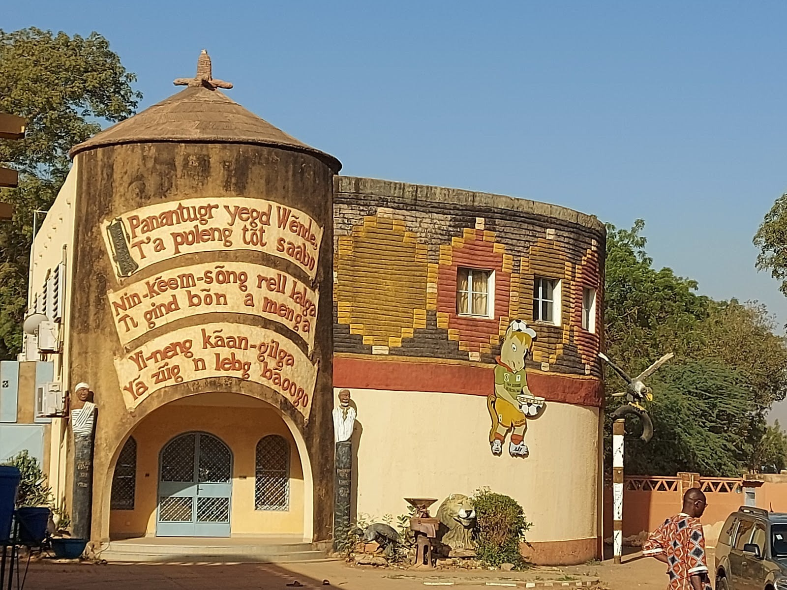
Les maisons traditionnelles des Mossis, majoritairement implantées sur le plateau central du Burkina Faso, sont un exemple emblématique d'architecture vernaculaire adaptée aux conditions climatiques sahéliennes et aux modes de vie agropastoraux. Chaque concession, qui regroupe plusieurs unités d'habitation autour d'une cour centrale, est protégée par une enceinte en banco. Les logements des anciens, des femmes, des jeunes garçons et des visiteurs sont clairement identifiés, et le grenier à céréales occupe une place stratégique au cœur de la concession. La construction repose sur l'utilisation du banco, un matériau local, et confère aux murs une forte inertie thermique, protégeant les habitants des fortes amplitudes thermiques en journée comme la nuit.
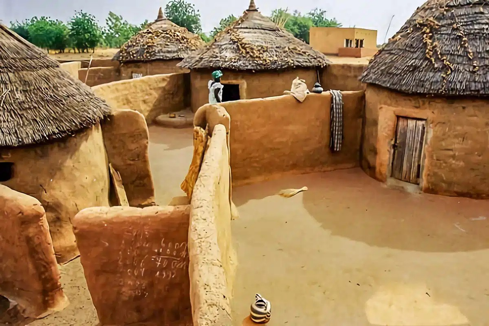
La danse des Mossis, connue sous le nom de Warba, est une danse traditionnelle du Burkina Faso. Elle est souvent associée à des cérémonies de mariage et d'autres fêtes populaires. Le danseur se tient droit, bien campé sur ses pieds, et fait pivoter son abdomen et ses fessiers à gauche et à droite sur un rythme rapide. Cette danse est réservée à l'origine à des cérémonies d'intronisation ou de funérailles, mais elle est maintenant également présente lors de célébrations modernes.
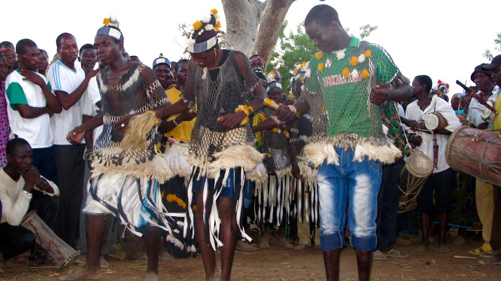
À Ouagadougou, la culture est une pulsation permanente. La ville abrite des structures culturelles majeures comme le CENASA (Centre national des arts, des spectacles et de l'audiovisuel), la Maison du Peuple, le CITO (Carrefour international de théâtre de Ouagadougou), le Musée de la Musique et le Centre de Développement Chorégraphique — La Termitière, premier du genre sur le continent africain. Chaque année ou presque, des événements artistiques d'envergure continentale s'y tiennent : le FESPACO, vitrine mondiale du cinéma africain ; le SIAO, temple de l'artisanat ; le Jazz à Ouaga ; les Récréâtrales ; ou encore le Festival des Expressions Urbaines — attirant créateurs, chercheurs, journalistes et touristes des cinq continents
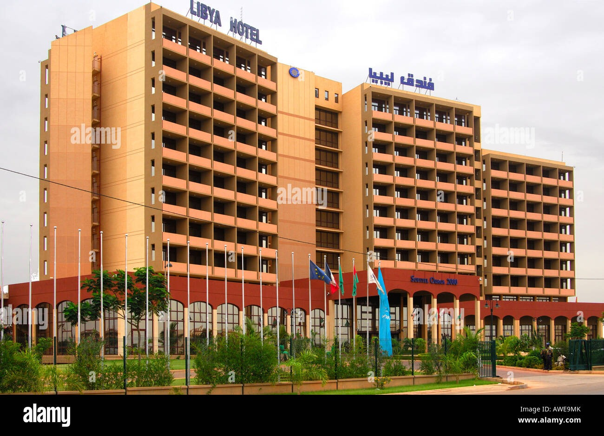
Le Festival panafricain du cinéma et de la télévision de Ouagadougou (FESPACO) est un événement majeur pour le cinéma africain, se déroulant tous les deux ans à Ouagadougou, Burkina Faso. Créé en 1969, il vise à promouvoir la diffusion des œuvres cinématographiques africaines et à favoriser les échanges entre professionnels du cinéma et de l'audiovisuel. La 29e édition du festival, qui se tiendra du 22 février au 1er mars 2025, mettra en avant le thème « Cinémas d'Afrique et identités culturelles » et le Tchad comme pays invité d'honneur. Le festival est reconnu pour ses compétitions prestigieuses, dont le célèbre Étalon de Yennenga, et pour son rôle dans la promotion et la sauvegarde du cinéma africain
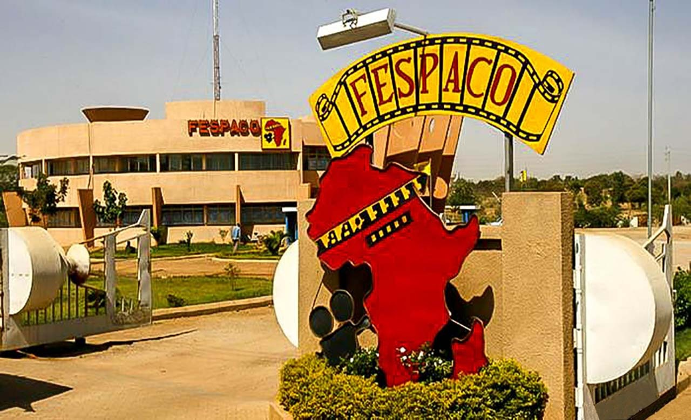
Le SIAI (Salon International de l'Artisanat de Ouagadougou) est une foire importante qui se déroule tous les deux ans à Ouagadougou, au Burkina Faso. Cet événement met en avant l'artisanat africain, présentant des produits artisanaux traditionnels et contemporains, ainsi que des spectacles culturels et artistiques. La première édition a eu lieu en 1988 et a été suivie de nombreuses années par des manifestations similaires, attirant des artisans et des visiteurs du monde entier. Pour plus d'informations, vous pouvez consulter le site officiel du SIAI
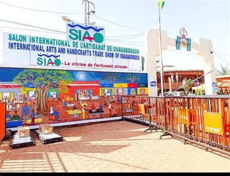
L'aéroport international de Ouagadougou, également connu sous le nom d'aéroport international Thomas Sankara, est le plus grand aéroport du Burkina Faso
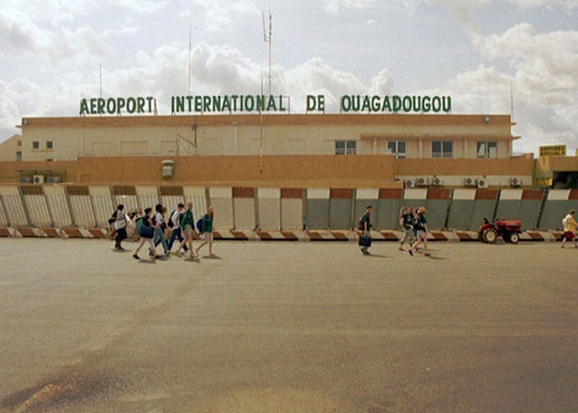
site touristique de Bagré Wéogo
Situé au cœur de la région, Bagré Wéogo est un espace où la nature, l’eau et la vie sauvage se rencontrent pour offrir une expérience unique aux visiteurs. Ce site, niché autour du majestueux barrage de Bagré, est à la fois un lieu de détente, d’aventure et d’apprentissage environnemental.
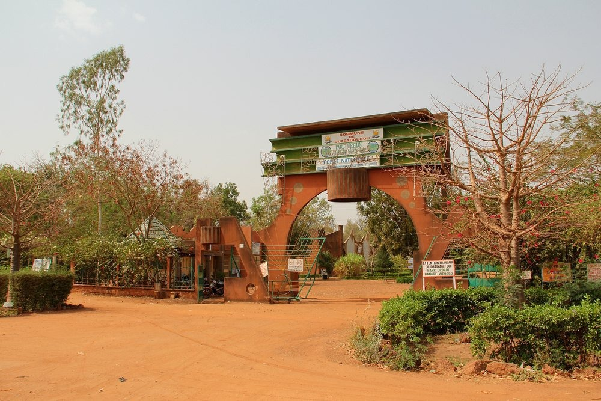
La SITARAIL est une société qui opère le réseau ferroviaire au Burkina Faso et en Côte d'Ivoire. Elle a récemment participé à l'exposition temporaire « Le train d’Abidjan à Ouagadougou : 1898 – 1958 » au Musée national du Burkina Faso, mettant en lumière les étapes de la construction du chemin de fer et son impact socio-économique. SITARAIL a également été impliquée dans la valorisation du patrimoine ferroviaire, notamment par la création d'un musée dédié au réseau Abidjan-Ouagadougou-Kaya à Bobo Dioulasso
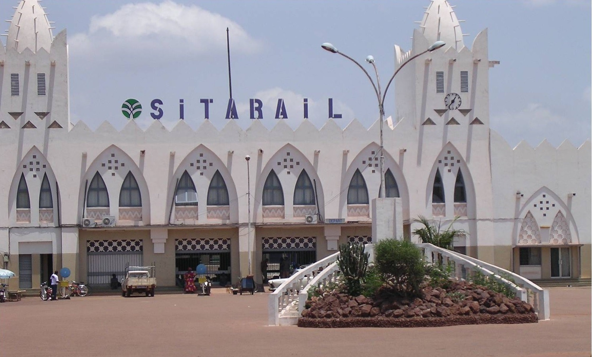
La base militaire de kadiogo
La base militaire de Kadiogo, ou Prytanée Militaire de Kadiogo (PMK), est un établissement d'enseignement secondaire burkinabé dépendant du ministère de la défense. Fondée par l'armée française en 1951, l'école a été dissoute en 1985 mais a été réouverte en 1992. Elle a pour mission principale de former des cadres militaires et civils pour servir la nation. L'école est située à proximité de Ouagadougou, sur le site militaire de Kamboincè, et a pour vocation de scolariser les enfants de militaires et d'anciens militaires de l'armée coloniale pour leur donner de meilleures chances d'éducation et de réussite.
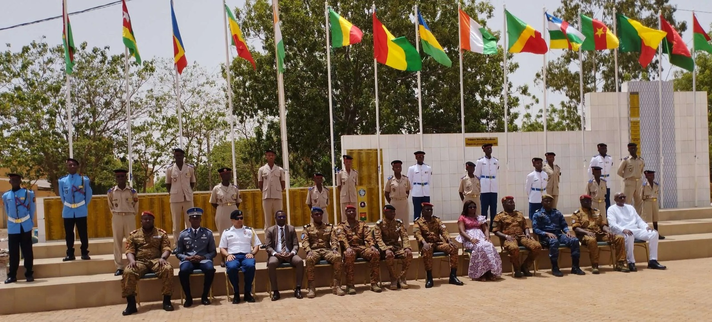
Tourisme & Culture
Ressources naturelles
Potentiel agricole 🌾
Potentiel éducatif 🏫
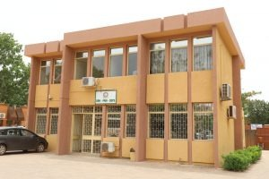
Potentiel commercial 🛒
Artisanat traditionnel
Spécialités culinaires
Galerie photos
Carte de situation
Provinces
Le saviez-vous ?
Le FESPACO est le plus grand festival de cinéma d'Afrique. Créé en 1969, il attire chaque année plus de 20 000 professionnels et spectateurs du monde entier. Kadiogo est le nouveau nom de la région depuis juillet 2025, en remplacement de l'ancienne dénomination "Centre".